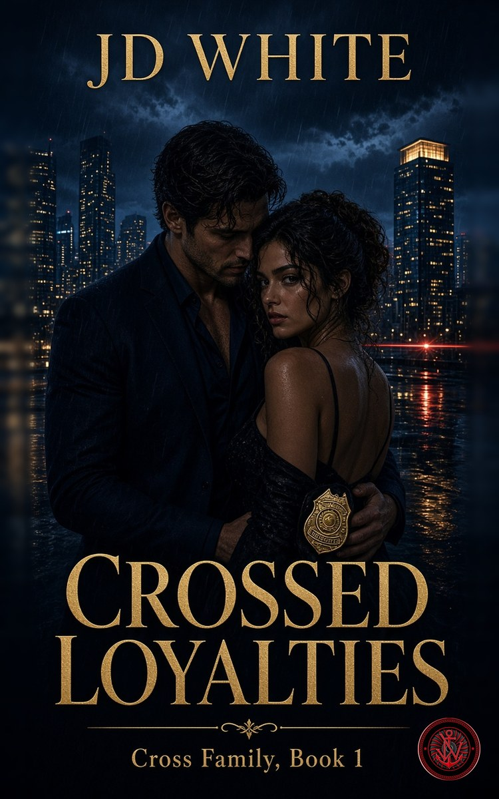

A novel by the host · JD White
Crossed Loyalties
Book 1 of the Cross Family series. Romantic suspense — not a Ghost Ship Files story, but it is written by the same Navy Veteran who opens the Files with Captain Eight.

The story
He promised her brother he’d keep her safe. Then he walked away. Now she’s back, and someone wants them both dead.
Five years ago, billionaire Ethan Valor kissed his best friend’s little sister on her mother’s porch the night of the funeral. Then he called it a mistake and got on a plane.
India Cross never forgave him. She turned her grief into a badge and became the detective who walks into every dark hallway alone.
Now she’s undercover at Ethan’s glittering acquisition gala, hunting a smuggler with a mole inside Valor Capital. When a fire alarm plunges the night into chaos, she collides with the one man who can blow her cover. Before she vanishes, she whispers a warning: Someone’s after you.
A ransacked apartment, a bugged safe house and a tail she can’t shake drive India into Ethan’s penthouse. Every argument burns hotter. Every near-miss pulls them closer. And the traitor is someone Ethan would trust with his life.
This time, neither of them can go it alone.
A slow-burn romantic suspense with brother’s-best-friend, off-limits, forced-proximity and second-chance tropes. It has a guaranteed happily ever after and opens a new series.
Kindle edition, $4.99. Also available in Kindle Unlimited.

The author
JD White
JD White is the author name of Jeremy White, a Navy Veteran. He served 8 years in the U.S. Navy, 2003–2011, as a Gas Turbine Systems Technician and plank owner on USS Momsen (DDG-92). He hosts Ghost Ship Files with Captain Eight. Crossed Loyalties is Book 1 of the Cross Family series.
The mark
The JDW badge
The red anchor on the cover is the same JDW badge that hangs at the entrance of this site. If you came here from a File, you already know the host. This book is a different kind of case: loyalty, a second chance, and a traitor close to home.
Meanwhile, on Ghost Ship Files
If you are here for ships, start with a File. If you want a novel by the host, this is the one.